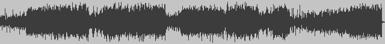

WaveShop

Nov 7, 2013
Version 1.0.14 fixes a playback issue. It's available for download.
Sep 3, 2013
Version 1.0.13 has a more modern look, and fixes some minor bugs.
Aug 4, 2013
Version 1.0.12 supports metadata editing, as shown here.
Jul 21, 2013
Version 1.0.11 adds equalization, limiting, compression, and other effects via LADSPA plugins.
Jul 20, 2013
Steve Harris' LADSPA plugins for 64-bit Windows (and 32-bit too): get them here.
Jun 20, 2013
Version 1.0.10 adds channel selection for certain commands.
May 24, 2013
Version 1.0.09 adds record options for one-touch and sound-activated recording, plus frequency sweep generation and clip detection in level meters.
May 5, 2013
Version 1.0.08 can record audio, including surround.
Apr 23, 2013
Version 1.0.07 can open AAC files, and MP4 files containing AAC audio.
Apr 13, 2013
Version 1.0.06 adds MP3 encoding, by popular demand.
Apr 6, 2013
Version 1.0.04 adds static and real-time spectrum analysis.
Mar 16, 2013
Version 1.0.03 has peak meters that support surround audio.
Mar 05, 2013
Version 1.0.02 supports MP3 import, sample rate conversion, and easy file concatenation.
Feb 23, 2013
Version 1.0.01 supports most common file formats.
Feb 09, 2013
WaveShop is officially released.
Jan 22, 2013
The beta version is available.
Jan 20, 2013
The alpha version is available.
{kind=link}
{kind=link}
{kind=link}
{kind=link}
{kind=link}
{kind=link}
{kind=link}